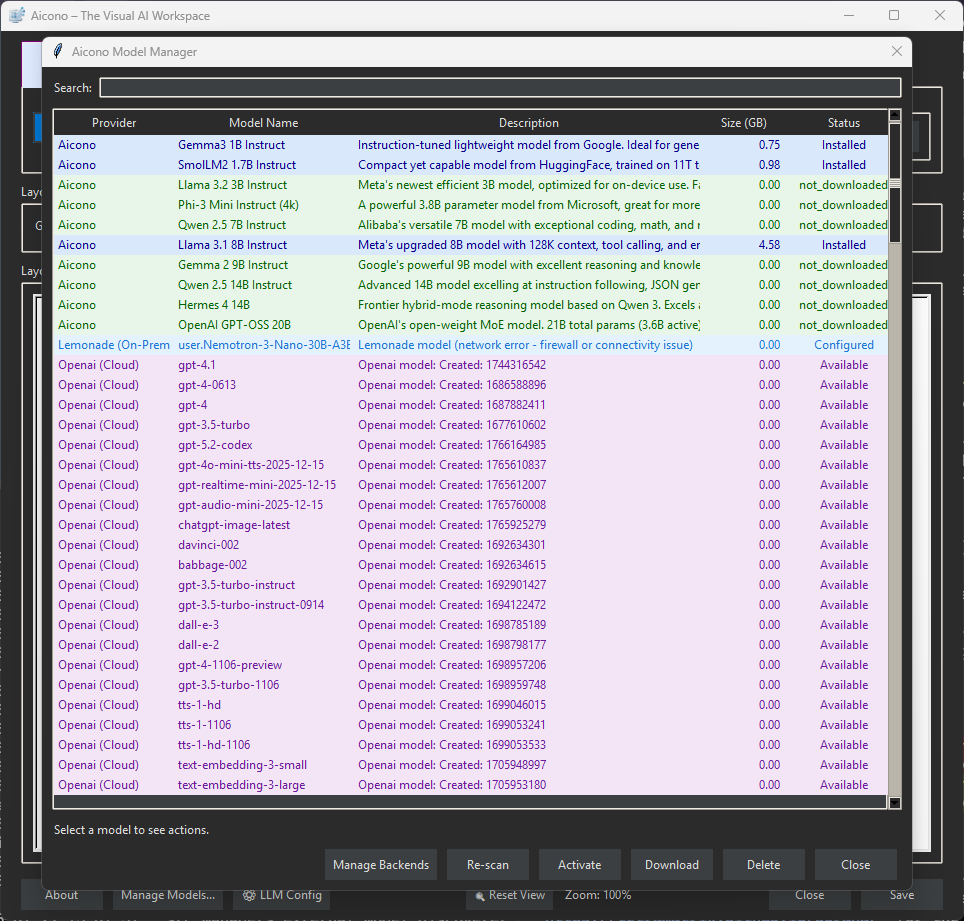
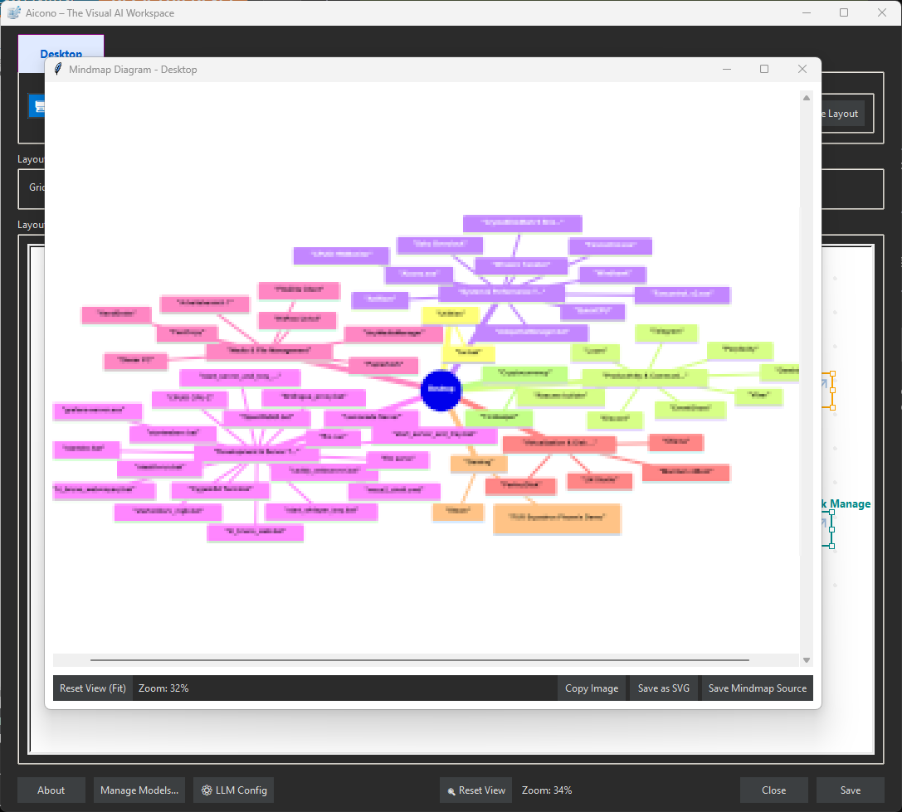

Aicono
An AI-powered desktop icon organizer for Windows
What is Aicono?
Aicono is a Windows application that uses AI to group desktop icons by category (such as "Work," "Games," or "Utilities") and arranges them without overlaps in a customizable area. The layout can be fine-tuned using a visual preview tool.
Key Features
- AI-Powered Grouping: Automatically categorizes icons logically into groups like Work, Games, and Utilities.
- Spatial Layout: Aicono positions icon groups, ensuring each group is cohesive, clearly separated, and fits within your custom "Working Area" without any overlaps.
- Customizable Area: Select specific desktop regions for icon placement.
- Visual Preview (WYSIWYG): See and approve the new layout before any changes are applied.
- Full WYSIWYG Canvas Editor: Direct manipulation of workspace elements. Drag and drop icons between groups, rearrange groups, rename items, and adjust group boundaries with a visual interface.
- Advanced Model Management: Connect to multiple cloud and on-prem LLM backends including OpenAI, Mistral, Ollama, Lemonade, Llamacpp, and other compatible services. The model manager lists all available models and allows users to activate or deactivate models as needed for specific tasks.
- Multi-Service AI Integration: Aicono supports connection to both on-prem and cloud-based AI services:
- On-Prem Services: Ollama, Llamacpp, Lemonade, and other self-hosted LLM solutions
- Cloud Services: OpenAI, Mistral, and other cloud-based AI platforms
- Flexible Configuration: Switch between different AI backends based on your needs, privacy requirements, and performance considerations
- Fully Configurable: All settings, from AI models to layout, are adjustable through the interface.
- Portable App: No installation required – just run and go.
- Freeware: Free community edition.

Cluttered desktop before using Aicono – icons scattered everywhere!
Desktops get messy fast with icons everywhere. Manual organizing is tedious, and Windows' basic auto-arrange doesn't cut it.
Organized desktop after Aicono arrangement – AI groups and arranges icons perfectly!
Aicono applies AI-based categorization (e.g., Work, Games, Utilities) and a spatial layout that avoids overlaps, placing icons within your selected desktop area. You can preview and apply the arrangement.

Aicono's main window – control your desktop organization with ease!

Aicono's model manager – configure AI models with ease!

Aicono's mindmap visualization – see your desktop organization in a diagram!
Target Audience
Aicono is designed for Windows users who want to organize their desktop icons efficiently, including gamers, students, professionals, and AI enthusiasts.
- Gamers: Group game icons neatly for quick access without desktop mess.
- Students: Organize study files and apps in logical categories.
- Professionals: Keep work tools grouped and arranged for efficiency.
- AI Enthusiasts: Use configurable AI in a practical, free tool.
🧠 AI: How It Works & Visual Fine-Tuning
Why are my results "hit-or-miss"?
Aicono uses AI models to group and arrange icons. The default model is lightweight and works offline, but may not always classify every icon perfectly, especially for less common applications. Advanced users can leverage the full-featured model manager to connect larger or custom models for improved accuracy, but this may require more system resources.
AI Model Performance
Aicono uses AI models to intelligently group desktop icons based on semantic meaning and logical relationships. The built-in default model is lightweight and works offline, but may not always classify icons perfectly, especially for less common applications. For optimal performance, we recommend using Llama 3.1 8b Instruct or higher models. Processing time depends entirely on the number of desktop icons - fewer icons mean faster processing times. Naturally, the best performance is achieved with paid cloud services.
Hardware Requirements
- Built-in Models: Range from 1B parameter (806MB) to 20B parameter (12-16GB)
- Recommended 8B Models (e.g., Llama 3.1 8b Instruct): Minimum 12 GB RAM or 8 GB VRAM for smooth operation
- Hardware Requirements Increase with Model Size: Larger models with more parameters require higher specifications
- Cloud Models: No local hardware requirements (requires internet connection)
Alternatives for Limited Hardware
If your system has limited hardware resources, you have two main options:
- Built-in Portable Model: Works fully offline but may classify complex icons as "Miscellaneous"
- Cloud-based LLMs: Connect to services like OpenAI, Mistral, etc. for high accuracy without local hardware costs
Model Management
Built-in Models: Range from 1B parameter (806MB) to 20B parameter (17-18GB). The smallest model (~806MB) is downloaded on first run and works fully offline. It is fast, but may sometimes classify complex icons as "Miscellaneous". For significantly better results, we recommend Llama 3.1 8b Instruct or higher models.
AI Integration: Supports connection to both on-prem and cloud-based AI services:
- Built-in Models: Pre-configured models accessible through the model manager.
- On-Prem Services: Lemonade, Llamacpp, Ollama, and other self-hosted LLM solutions
- Cloud Services: OpenAI, Mistral, and other cloud-based AI platforms (paid services provide the best performance)
- Configuration: Switch between different AI backends based on requirements
Note: Larger models can provide better grouping, but require more memory and processing power. Processing time is directly proportional to the number of icons - fewer icons result in faster processing. For the best performance, especially with large desktops, we recommend using paid cloud services.
Visual Fine-Tuning with WYSIWYG Editor 🆕 NEW
If the AI does not classify an icon as desired, you can now adjust the results visually with our intuitive drag-and-drop editor:
- Drag & Drop: Simply drag icons between groups to reclassify them visually.
- Group Management: Resize, reposition, and rename groups directly on the canvas.
- Real-Time Preview: See changes immediately as you make adjustments.
Key Differentiators
Aicono provides advanced desktop organization capabilities through AI-driven classification and spatial layout algorithms.
| Feature | Aicono | Other Tools |
|---|---|---|
| AI Grouping | Semantic Classification | Manual Grouping |
| Layout Algorithm | Spatial No-Overlap | Basic Arrange |
| Preview | Visual Tool (WYSIWYG) | None |
| Visual Editor | Full Canvas Editor with Drag & Drop | None |
| Portability | No Installation Required | Installer Required |
| AI Customization | Multiple Backend Support | Limited Options |
| Configuration | Visual Interface | Complex Configuration |
| Cost | Free Community Edition | Paid / Basic |
Practical Usage Examples
Common use cases for Aicono:
- Gaming Setup: Groups games in one area, clears rest for quick access.
- File Organization: Sorts documents by project categories.
- Work Environment: Arranges tools in a compact desktop zone.
- Academic Use: Groups school apps and files neatly.
Installation & Setup
Simple setup process:
- Download: Get
Aicono.exe. - Launch: Double-click the file and wait for the main window.
- Configure: Open Settings, select your AI model and work area.
System Requirements
| Component | Minimum |
|---|---|
| OS | Windows 11 (64-bit) |
| 🧠 AI Support | Built-in models or on-prem/cloud AI services |
| 💾 RAM | ≥ 4 GB |
| 💽 Storage | Minimum 2 GB (app + model) |
| ⚡ Rights | Standard user |
Configuration Tips
Aicono offers extensive configuration options. Here are key tips to help you achieve optimal results.
1. REQUIRED: Disable Windows "Auto-Arrange"
Aicono needs full control to move your icons. If Windows is also trying to manage them, your layout will break or won't apply correctly.
To check this: Right-click your Desktop > go to "View" > and make sure "Auto-arrange icons" is UNCHECKED.
2. Balancing Your Working Area and Grid Controls
Think of the "Working Area" as a boundary to contain your icons. Its only job is to ensure icons don't go outside the boundaries you set.
The "Grid Size" control determines how your icon groups will fit inside that boundary with snap-to-grid auto-arrange functionality.
There is no single "right" setting! The best layout is a balance between the size of your boundary and the grid controls you choose. If things look cramped, try adjusting the grid size to give icons more room.
Experiment with the WYSIWYG (What You See Is What You Get) preview. Adjust the grid size and watch your layout change in real-time. You can also fine-tune your layout with the visual editor — simply drag and drop icons between groups, resize and reposition groups, or rename items to reorganize as needed.
Visual Fine-Tuning with WYSIWYG Canvas Editor
Aicono features a full visual editor that allows you to fine-tune your desktop organization with a drag-and-drop interface.
- Drag & Drop Icons: Simply drag icons between groups to reclassify them. For example, if the AI placed Steam in Work, just drag it to the Games group.
- Resize & Reposition Groups: Adjust the size and position of icon groups directly on the canvas.
- Rename Groups: Click on group names to rename them according to your preferences.
- Visual Feedback: See changes in real-time as you make adjustments to your desktop layout.
Visual Editor Features
The WYSIWYG canvas editor provides:
- Real-time drag-and-drop reorganization
- Visual boundary adjustment for groups
- Renaming of groups and items
- Preview of changes before applying
- Automatic saving of your customizations
Support & Donations
Support Aicono development.
☕ Buy me a coffee or support via PayPal or Bitcoin Cash!

Bitcoin Cash (BCH)
📌 Bitcoin Cash (BCH)
bitcoincash:qrvhk77ujevd9n7jse4jewm99eg95at7tvc6m9v2vv


Related Projects
New Spaceship - Retro Mini Game:
Featured on itch.io:

Featured on IndieDB:

RyzenZPilot - Dynamic Power Management Tool:
Sorana - The Visual AI Workspace:
Sorana is an AI-powered visual workspace that transforms how you organize and interact with digital files. Using semantic AI analysis, it automatically groups related files and folders onto a spatial 2D canvas, replacing traditional hierarchies with intuitive visual layouts. Build drag-and-drop workspaces and no-code agent pipelines, connect to on-prem or cloud AI backends (OpenAI, Mistral, LLamacpp, Lemonade, Ollama), and keep your data under your control.
Homepage: